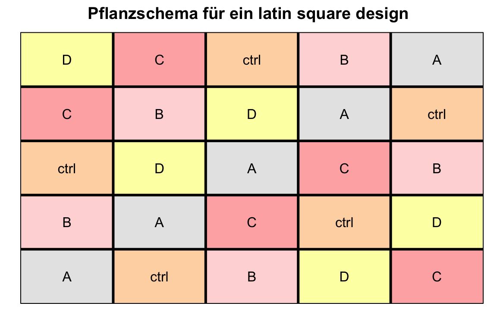
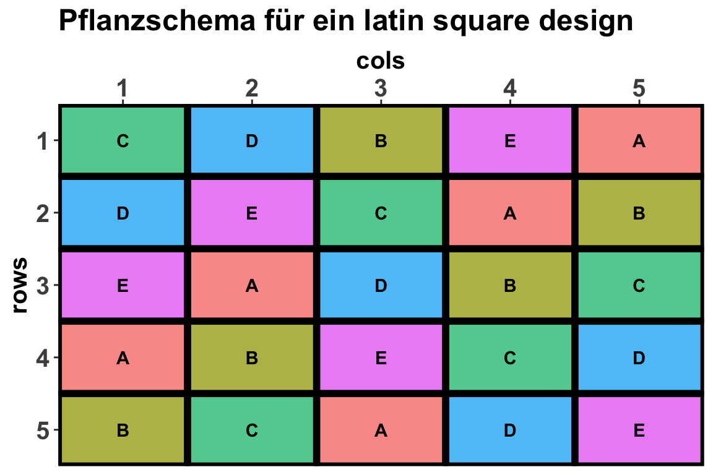

set.seed(2034)
pacman::p_load(tidyverse, magrittr, dae, agricolae,
conflicted)
conflict_prefer("select", "dplyr")
conflict_prefer("filter", "dplyr")
conflict_prefer("mutate", "dplyr")
conflict_prefer("set_names", "magrittr")
cbbPalette <- c("#999999", "#E69F00", "#56B4E9", "#009E73",
"#F0E442", "#0072B2", "#D55E00", "#CC79A7")55 Einfache Designs
Version vom September 04, 2023 um 10:54:37
“This is my favorite part about analytics: Taking boring flat data and bringing it to life through visualization.” — John Tukey”
In diesem Kapitel wollen wir uns mit der Erstellung von einfachen experimentellen Designs beschäftigen. Dementsprechend schauen wir uns nur die drei folgenden Designs hier in diesem Kapitel an.
Als Spezialfälle dann noch folgende Designs am Ende des Kapitels.
Dabei werden wir verschiedene Wege gehen. Leider geht es hier wirklich nicht mehr ohne eine Idee der Programmierung in R. Sonst kannst du leider dem Kapitel nicht folgen. Bitte schau auch nochmal in das vorherige Kapitel zur Versuchsplanung in R. Wir schauen uns jetzt einmal die einfache Umsetzung händisch an, dann einmal in dem R Paket agricolae und abschließend in dem R Paket dae. Nicht immer ist alles möglich, mal ist es dann händisch zu kompliziert oder aber eines der Pakete bietet das experimentelle Design nicht an - oder ich habe es nicht gefunden.
Ein Teil der Beispiele basiert auf DSFAIR von P. Schmidt und wurde von mir angepasst und vereinfacht. Hier findet sich auch weiterführende Literatur und weitere Beispiele.
In dem nachfolgenden Kapitel zu den fortgeschrittenen Designs findest du dann noch mehr experimentelle Designs und wie du diese Designs in R generieren kannst. Dieses Kapitel sollte aber ausreichen um einfache Projekte im Rahmen einer Abschlussarbeit oder einem Studienprojekt zu planen.
Auch findest du im Chapter 2 Designing experiments aus Experimental methods in agriculture noch schöne Beispiele und photographische Abbildungen für experimentelle Designs.
55.1 Genutzte R Pakete
Wir wollen folgende R Pakete in diesem Kapitel nutzen.
Am Ende des Kapitels findest du nochmal den gesamten R Code in einem Rutsch zum selber durchführen oder aber kopieren.
55.2 Complete randomized design (CRD)
Das komplett randomisierte Design ist sicherlich das einfachste Design. Aber auch das praktischste, wenn du ein gar nicht so komplexes Experiment hast. Im PRinzip hast du nur eine Behandlung mit unterschiedlichen Gruppen. Oder allgemeiner gesprochen, du hast einen Faktor \(f_1\), der deine Behandlungen beinhaltet. Du kannst viele Behandlungen haben, die dann als Level des Faktors dargestellt werden. Wir gehen jetzt das complete randomized design einmal an einem Beispiel durch. Hier einmal für eine Behandlung trt mit vier Leveln oder auch Gruppen ctrl, A, B und C sowie als Outcome das Trockengewicht drymatter. Das Outcome müssen wir gar nicht weiter beachten, es dient nur als Gedankenstütze.
Wir haben also folgendes Modell, was wir dann in einem Design abbilden wollen.
\[ drymatter \sim \overbrace{trt}^{f_1} \]
mit
- dem Faktor Behandlung
trtund den vier Behandlungsstufen als Levelctrl,A,BundC.
Jetzt ist nur noch die Frage, wie oft wollen wir jede Behandlung wiederholen (eng. replicate). Wir entscheiden uns dafür jeweils 4 Pflanzen pro Behandlungsgruppe zu verwenden. Damit haben wir vier Wiederholungen für vier Behandlungsgruppen und somit insgesamt zwanzig Pflanzen oder auch Beobachtungen.
Modell zur Auswertung
Wir rechnen ein simples lineares Modell für die statistische Analyse.
fit <- lm(drymatter ~ trt, data = crd_tbl)
Randomisierung kurz und schmerzlos
Wenn du für deine zwanzig Pflanzen nur ein Randomisierungmuster brauchst, dann empfehle ich dir die Folgende schnelle Art und Weise. Du nimmst die Zahlen von 1 bis 20 und mischt die Zahlen einmal mit der Funktion sample() durch. Dann erstellst du dir als dein Grid für deine Pflanzen mit einer \(4 \times 5\)-Matrix und pflanzt nach diesem Grid die Pflanzen ein. Das war es dann und du bist durch.
55.2.1 … mit expand_grid()
Warum kompliziert, wenn es auch einfach geht. Wir nutzen hier einmal die Funktion expand_grid() um uns das complete randomized design zu erstellen. Die Randomisierung kommt dann über das sample() und der Pflanzenidentifikationsnummer pid. Das geht super einfach und wir brauchen auch gar keine anderen höheren Funktionen von komplexeren R Paketen. Die Spalte trt_rep wird uns später helfen die Beobachtung dann in dem Grid der Pflanzenposition auf dem Tisch wiederzufinden.
crd_long_tbl <- expand_grid(trt = 1:4, rep = 1:4) %>%
mutate(trt = factor(trt, labels = c("ctrl", "A", "B", "C")),
rep = factor(rep, labels = as.roman(1:4)),
trt_rep = str_c(trt, ".", rep),
pid = sample(1:n())) %>% ## Randomsierung über alless
select(pid, everything())
crd_long_tbl# A tibble: 16 x 4
pid trt rep trt_rep
<int> <fct> <fct> <chr>
1 8 ctrl I ctrl.I
2 9 ctrl II ctrl.II
3 7 ctrl III ctrl.III
4 12 ctrl IV ctrl.IV
5 10 A I A.I
6 16 A II A.II
7 14 A III A.III
8 4 A IV A.IV
9 3 B I B.I
10 15 B II B.II
11 1 B III B.III
12 11 B IV B.IV
13 5 C I C.I
14 13 C II C.II
15 6 C III C.III
16 2 C IV C.IV Dann kannst du dir die Datei mit der Funktion write_xlsx() aus dem R Paket writexl raus schreiben und dann entsprechend mit deinen Messwerten für das Trockengewicht ergänzen.
crd_long_tbl %>%
write_xlsx("template_sheet.xlsx")Für die Visualisierung fehlt uns jetzt noch die Positionsangaben auf dem Feld. Daher bauen wir uns einmal ein Grid der Reihen rows und der Spalten cols. Das Grid können wir dann mit den nach den Pflanzen-ID’s sortieren Design zusammenbringen. Damit haben wir dann eigentlich schon fast alles zusammen.
crd_plot_tbl <- crd_long_tbl %>%
arrange(pid) %>%
bind_cols(expand_grid(row = 1:4, col = 1:4))
crd_plot_tbl# A tibble: 16 x 6
pid trt rep trt_rep row col
<int> <fct> <fct> <chr> <int> <int>
1 1 B III B.III 1 1
2 2 C IV C.IV 1 2
3 3 B I B.I 1 3
4 4 A IV A.IV 1 4
5 5 C I C.I 2 1
6 6 C III C.III 2 2
7 7 ctrl III ctrl.III 2 3
8 8 ctrl I ctrl.I 2 4
9 9 ctrl II ctrl.II 3 1
10 10 A I A.I 3 2
11 11 B IV B.IV 3 3
12 12 ctrl IV ctrl.IV 3 4
13 13 C II C.II 4 1
14 14 A III A.III 4 2
15 15 B II B.II 4 3
16 16 A II A.II 4 4Jetzt können wir uns einmal das Grid der Pflanzungen in der Abbildung 55.1 einmal anschauen. Wir nutzen hier die Möglichkeiten des R Pakets desplot. Hier wird es dann nochmal klarer wo die Pflanzen eigentlich hin sollen. Du kannst dir dann den Tisch so einteilen, dass eben oben links die vierte Wiederholung der Behandlung B steht. Dann steht rechts daneben die zweite Wiederholung der Behandlung C. Nach der Ernte bestimmst du dann das Trockengewicht und trägst es in die Exceltabelle ein.
desplot(data = crd_plot_tbl,
form = trt ~ col + row,
text = trt_rep, cex = 1, show.key = FALSE,
shorten = "no", flip = TRUE,
main = "Pflanzschema für ein complete randomized design"))
Das war jetzt die schnelle Variante mit expand_grid() und der anschließenden Visualisierung mit einem Plan für die Positionen der jeweiligen Beobachtungen.
55.2.2 … mit agricolae
Als Alternative bietet sich dann auch das R Paket agricolae an, obwohl ich für so einfaches Design nicht agricolae empfehlen kann. Wir haben nämlich so ein paar gewünschte Eigenschaften und damit musst du etwas programmieren um gut mit dem Paket umgehen zu können. Wir nutzen hier die Funktion design.crd() um uns das Design eines complete randomized design zu erstellen. Die Funktion benötigt einen Vektor mit den Namen der Behandlungslevel. Also in unserem Fall eben ctrl, A, B und C. Dann noch einen Vektor r mit den Wiederholungen pro Behandlungslevel. Hier ist Funktion design.crd() etwas besser, denn wir können hier auch unbalancierte Designs abbilden. Der Nachteil ist, dass wir faktisch danach keine andere Funktion mehr aus den anderen Paketen nutzen können. Deshalb ist es sinniger, balanciert zu planen und dann eben die Pflanzen später zu entfernen.
Hier einmal die simple Anwendung der Funktion zum erstellen eines complete randomized design mit vier Behandlungen und fünf Wiederholungen pro Behandlung.
Jetzt kommt leider der etwas aufwenidigere Teil. Das Paket agricolae ist schon etwas älter und damit auch teilweise nicht mehr so kompatibel und auf dem Stand der Zeit. Wir bauen uns daher jetzt noch ein paar Sachen zurecht. Am Ende wollen wie ein sauberes tibble mit anständigen Namen und einer Variable trt_rep, die uns sagt welche Behandlung und Wiederholung wir vorliegen haben.
crd_book_tbl <- crd_obj %>%
pluck("book") %>%
as_tibble() %>%
set_names(c("plots", "r", "trt")) %>%
mutate(trt_rep = str_c(trt, ".", r))
crd_book_tbl# A tibble: 20 x 4
plots r trt trt_rep
<dbl> <int> <chr> <chr>
1 101 1 ctrl ctrl.1
2 102 1 C C.1
3 103 2 C C.2
4 104 2 ctrl ctrl.2
5 105 1 A A.1
6 106 1 B B.1
7 107 3 ctrl ctrl.3
8 108 2 A A.2
9 109 3 C C.3
10 110 3 A A.3
11 111 4 A A.4
12 112 4 C C.4
13 113 2 B B.2
14 114 5 C C.5
15 115 4 ctrl ctrl.4
16 116 5 ctrl ctrl.5
17 117 3 B B.3
18 118 5 A A.5
19 119 4 B B.4
20 120 5 B B.5 Schön ist was anderes, da hast du recht, aber wir können uns dann auch noch das Pflanzgrid einmal als Abbildung wiedergeben lassen. Da die Ausgabe der Funktion design.crd() schon permutiert ist, müssen wir hier nur die Informationen zu den Zeilen und Spalten ergänzen. Im Prinzip kannst du entscheiden, wie du die Wiederholungen cols oder Behandlungen rows anordnest. Du kannst am Ende aber auch einfach den ausgedruckten Zettel drehen.
crd_plot_tbl <- crd_book_tbl %>%
bind_cols(expand_grid(rows = 1:4,
cols = 1:5))In der Abbildung 55.2 siehst du dann einmal das Schema für die Pflanzungen eines complete randomized design. Das Schema unterscheidet sich so nicht von dem Eigenbau mit expand_grid(). Da bist du frei zu entscheiden was du nutzen möchtest.
desplot(trt ~ rows + cols, flip = TRUE,
text = trt_rep, cex = 1, shorten = "no",
data = crd_plot_tbl,
main = "Pflanzschema für ein complete randomized design"",
show.key = FALSE) 
Damit wären wir auch schon durch. Wir haben in R im Prinzip die beiden Möglichkeiten das complete randomized design selber oder mit dem R Paket agricolae zu erstellen.
55.3 Randomized complete block design (RCBD)
Jetzt kommen wir zum vermutlich meist genutzten Design, dem randomized complete block design. Hier haben wir neben dem Faktor Behandlung trt auch noch einen zusätzlichen Faktor block. Wir haben dann für jede Behandlung/Block-Kombination einen Messwert. Wenn du am Feld stehst, ist es aber meistens so, dass wir nicht eine Pflanze pro Block haben, sondern 20 oder mehr Pflanzen. Wir mitteln aber den Wert für das Trockengewicht über alle 20 Pflanzen pro Block und haben dann wieder einen Messwert für jede Behandlung/Block-Kombination. Das ist manchmal etwas verwirrend.
Wir haben also folgendes Modell vorliegen, wir habend den Faktor Behandlung trt sowie den Faktor Block block. Für jede der Behandlung/Block-Kombination erhalten wir dann einen Wert. Wir schauen uns gleich vier Behandlungen und vier Blöcke an.
\[ drymatter \sim \overbrace{trt}^{f_1} + \underbrace{block}_{f_2} \]
mit
- dem Faktor Behandlung
trtund den vier Behandlungsstufen als Levelctrl,A,BundC. - dem Faktor Block
blockund den vier LevelnIbisIV.
Wir randomiseren unsere Behandlungen trt in den Blöcken block. Somit ergibt sich Abbildung 55.3 in der unsere Behandlungen in den Blöcken genestet sind.
flowchart LR
A(trt):::factor --- B(((nested))) --> C(block):::factor
classDef factor fill:#56B4E9,stroke:#333,stroke-width:0.75px
trt nested im Faktor block.Damit gilt dann auch, dass jeder Block alle Behandlungslevel enthält und die Behandlungen innerhalb eines Blockes randomsiert werden. Unsere Randomisierungseinheit ist also der Block.
\[ \underbrace{\mbox{Blöcke}}_{f_2} \xrightarrow[]{beinhaltet\; alle} \overbrace{\mbox{Behandlungen}}^{f_1} \]
Theoretisch könnten wir auch pro Block mehrere einzelne Pflanzen messen, dann sind wir aber im Subsampling drin. Wenn du mehr zum Design erfahren möchtest, dann schau einfach mal bei Abschnitt zum subsampling im nächsten Kapitel rein.
Modell zur Auswertung
Wir rechnen ein multiples lineares Modell für die statistische Analyse.
fit <- lm(drymatter ~ trt + block + trt:block, data = rcbd_tbl)Hier einmal der Link zu der Auswertung zum Subsampling bei DSFAIR.
55.3.1 … mit expand_grid()
Das praktische an expand_grid() ist, dass du nochmal eine Vorstellugn über den Aufbau des Experiments erhälst. Wir nehmen als erstes den Block block und ergänzen dann die Behandlungen trt. Damit erschaffen wir uns erst die vier Blöcke und dann pro Block die vier Behandlungen. Dann müssen wir noch unsere Daten etwas mutieren und schöner machen. Wir ergänzen noch einen Identifikator trt_block damit wir auch unsere Positionen für die Pflanzungen später in den Abbildungen wieder finden. Am Ende gruppieren wir die Daten nochmal pro Block damit wir dann innerhalb der Blöcke unsere Behandlungslevel über die Funktion sample() randomsisiern können.
rcbd_plot_tbl <- rcbd_long_tbl %>%
bind_cols(expand_grid(rows = 1:4, cols = 1:4))Die dicken, schwarzen Linien stellen die Grenzen der Blöcke dar. Im realen Leben kann eine farbige Kachel in der Abbildung ein ganzes Feld sein und die Blockgrenzen sind dann eben Feldwege. Die Abbildung 55.4 stellt ja auch nur eine schematische Darstellung der Pflanzungen dar.
desplot(data = rcbd_plot_tbl,
form = trt ~ rows + cols,
out1 = block,
main = "Pflanzschema für ein randomized complete block design"",
text = trt_block, cex = 1, show.key = FALSE, shorten = "no")
Dann können wir auch schon unseren Versuchsplan als Exceldatei rausschreiben. Wir können dann noch weitere Spalten als Outcome ergänzen und dann mit der Datei unsere Auswertung durchführen.
rcbd_long_tbl %>%
write_xlsx("template_sheet.xlsx")
55.3.2 … mit agricolae
Wir können auch ein randomized complete block design mit agricolae erstellen. Hier geht es ähnlich wie vorher schon. Wichtig ist, dass wir hier unsere Blöcke wieder mit r bezeichnen. Damit bauen wir uns also wieder ein Design mit vier Behandlungsleveln und fünf Blöcken.
rcbd_obj <- design.rcbd(trt = c("ctrl", "A", "B", "C"), r = 5)Leider ist die Ausgabe von design.rcbd() etwas ungünstig für die weitere Darstellung. Deshalb wandeln wir etwas das Feldbuch für unsere Bedürfnisse um. Wir könnten natürlich gleich mit dem Feldbuch weitermachen und die Pflanzen in der Form ausbringen, aber wir wollen ja noch ein Pflanzschema erstellen.
rcbd_book_tbl <- rcbd_obj %>%
pluck("book") %>%
as_tibble() %>%
set_names(c("plots", "block", "trt"))
rcbd_book_tbl# A tibble: 20 x 3
plots block trt
<dbl> <fct> <fct>
1 101 1 A
2 102 1 C
3 103 1 B
4 104 1 ctrl
5 201 2 C
6 202 2 ctrl
7 203 2 B
8 204 2 A
9 301 3 ctrl
10 302 3 C
11 303 3 B
12 304 3 A
13 401 4 C
14 402 4 B
15 403 4 A
16 404 4 ctrl
17 501 5 ctrl
18 502 5 C
19 503 5 B
20 504 5 A Jetzt nochmal das Grid für die Pflanzungen ergänzt. Hier müssen wir etwas mehr schauen, wie wir die Zeilen rows und Spalten cols zuordnen. Unsere Zeilen sind die Blöcke, aber innerhalb der Blöcke müssen wir die Anzahl der Behandlungen nummerieren. Deshalb machen wir den Zwischenschritt mit group_by().
rcbd_plot_tbl <- rcbd_book_tbl %>%
mutate(rows = as.numeric(block),
trt_block = str_c(trt, ".", block)) %>%
group_by(rows) %>%
mutate(cols = 1:n())Zur Kontrolle einmal die Ausgabe des skretch. Auch hier steht wieder nichts an den Zeilen und Spalten, so dass wir immer überlegen müssen, was war nun der Block und was war die Behandlung.
rcbd_obj %>%
pluck("sketch") %>%
t() [,1] [,2] [,3] [,4] [,5]
[1,] "A" "C" "ctrl" "C" "ctrl"
[2,] "C" "ctrl" "C" "B" "C"
[3,] "B" "B" "B" "A" "B"
[4,] "ctrl" "A" "A" "ctrl" "A" Um es schöner zu haben schauen wir uns einmal die Abbildung 55.5 als Pfalnzschema an. Wir haben hier die gleiche Ausgabe wie auch schon weiter oben. Die Positionen haben sich geändert, wir haben ja auch zweimal randomisiert. Sonst sehen wir aber das Gleiche. Die schwarze Striche sind wieder die Grenzen unserer Blöcke und können im echten Leben dann Feldwege oder Gewächshäuser sein.
desplot(trt ~ rows + cols, flip = TRUE,
text = trt_block, cex = 1, shorten = "no",
out1 = block,
data = rcbd_plot_tbl,
main = "Pflanzschema für ein randomized complete block design"",
show.key = FALSE, key.cex = 0.5)
55.4 Latin square design (LSD)
Das latin suare design erweist sich dann als besonders sinnvoll, wenn zwei unabhängige Störgradienten vorhanden sind, die orthogonal zueinander ausgerichtet sind. Ein Beispiel hierfür wäre im Boden des Versuchsfeldes ein Feuchtigkeitsgefälle von Nord nach Süd und ein Nährstoffgefälle von Ost nach West. Um diese Störgrößen im Boden zu berücksichtigen, werden die Randomisationseinheiten in Form von Quadraten angeordnet. Diese Anordnung stellt sicher, dass sowohl die Anzahl der Zeilen als auch die Anzahl der Spalten zwangsläufig gleich sind. Durch diese Anordnung ist es möglich, eine Randomisierung durchzuführen, bei der sowohl jede Spalte als auch jede Zeile einen vollständigen Block bildet, ähnlich wie bei einem Sudoku-Raster. Es darf eben in jeder Zeile und Spalte immer nur einmal eine Behandlung auftauchen.
Das Bild des ersten Latin Square an einem Hang, angelegt und geplant von Roland Fisher an der Rothamsted Experimental Station.
Auch findest du im Chapter 2 Designing experiments aus Experimental methods in agriculture noch schöne Beispiele für ein Latin Square Design.
Schauen wir uns einmal das Modell an nachdem wir unseren Versuchsplan bauen wollen. Wir haben wie immer unsere Behandlung trt sowie den Block, den wir aber in rows und cols aufteilen. Die Regel lautet im latin suare design, dass keine Behandlung in der gleichen Zeile und Spalte doppelt auftreten darf.
\[ drymatter \sim \overbrace{trt}^{f_1} + \underbrace{rows}_{f_2} + \overbrace{cols}^{f_3} \]
mit
- dem Faktor Behandlung
trtund den fünf Behandlungsstufen als Levelctrl,A,B,CundD. - dem Faktor Reihe
rowsmit der Anzahl der Level gleich der Level der Behandlung also hier fünf. - dem Faktor Spalte
colsmit der Anzahl der Level gleich der Level der Behandlung also hier fünf.
In der Abbildung 55.6 sehen wir nochmal den schematischen Aufbau eines latin suare design dargestellt. VErmutlich hilft es auch sich einmal das finale Design in der Abbildung 55.7 einmal anzuschauen. Wichtig ist, dass wir den Block gar nicht betrachten. Wir haben hier eher fünfunzwanzig kleine Subblöcke, die wir durch die Position der rows und cols definieren.
flowchart LR
A(trt):::factor --- B(((nested))) --> C(rows):::factor
B(((nested))) --> D(cols):::factor
C --- F(block)
D --- F
classDef factor fill:#56B4E9,stroke:#333,stroke-width:0.75px
rows und cols genestet, die einem quadratischen Block mit den Längen der Anzahl der Level der Behandlungen entsprechen.Wir schauen uns hier nur das R Paket agricolae und das R Paket dae an. Selber machen ist hier nicht, da du dir bei der Erstellung sehr schnell Fehler rein holst. Es ist super frickelig darauf zu achten, dass sich wirklich keine Behandlung in irgendeiner Zeilen- oder Spaltenposition überschneidet. Da sind die vorgefertigten Funktionen echt mal besser.
Modell zur Auswertung
Wir rechnen ein multiples lineares Modell für die statistische Analyse.
fit <- lm(drymatter ~ trt + cols + rows, data = lsd_tbl)
55.4.1 … mit agricolae
Im latin suare design brauchen wir nur einen Behandlungsvektor. Durch die Anzahl der Behandlungen wird auch die Größe des latin suare bestimmt. Wir haben hier fünf Behandlungen vorliegen, also kriegen wir dann auch ein \(5 \times 5\)-latin suare für unseren Versuchsplan raus.
lsd_obj <- design.lsd(trt = c("ctrl", "A", "B", "C", "D"),
seed = 42)Zum Glück kriegen wir hier auch die Zeilen und Spalten direkt von der Funktion design.lsd() geliefert. Leider als Faktoren, so dass wir die Faktoren nochmal in Zahlen umwandeln damit es später mit der Visualisierung klappt.
lsd_book_tbl <- lsd_obj %>%
pluck("book") %>%
as_tibble() %>%
set_names(c("plots", "rows", "cols", "trt")) %>%
mutate(rows = as.numeric(rows),
cols = as.numeric(cols))
lsd_book_tbl# A tibble: 25 x 4
plots rows cols trt
<dbl> <dbl> <dbl> <fct>
1 101 1 1 D
2 102 1 2 C
3 103 1 3 ctrl
4 104 1 4 B
5 105 1 5 A
6 201 2 1 C
7 202 2 2 B
8 203 2 3 D
9 204 2 4 A
10 205 2 5 ctrl
# i 15 more rowsDann einmal die Ausgabe des sketch. Hier kann man mal nichts falsch machen. Wir kriegen unser Quadrat als latin suare und gut ist.
lsd_obj %>%
pluck("sketch") %>%
t() [,1] [,2] [,3] [,4] [,5]
[1,] "D" "C" "ctrl" "B" "A"
[2,] "C" "B" "D" "A" "ctrl"
[3,] "ctrl" "D" "A" "C" "B"
[4,] "B" "A" "C" "ctrl" "D"
[5,] "A" "ctrl" "B" "D" "C" In der Abbildung 55.7 siehst du dann nochmal das latin square design visualisiert. Die dicken Linien sind wieder die Blockgrenzen und mögen dann die Feldwege oder Wege zwischen den Behandlungens sein. Wie du siehst, gibt es pro Zeile und Spalte immer nur eine Behandlung. Wir haben einmal perfekt über das ganze latin square randomisiert.
desplot(trt ~ rows + cols, flip = TRUE,
out1 = rows, out1.gpar = list(col="black", lwd=3),
out2 = cols, out2.gpar = list(col="black", lwd=3),
text = trt, cex = 1, shorten = "no",
data = lsd_book_tbl,
main = "Pflanzschema für ein latin square design"",
show.key = FALSE, key.cex = 0.5)
Dann nochmal das latin square design rausschreiben und wir können mit der Datenerfassung beginnen.
lsd_book_tbl %>%
select(trt, rows, cols) %>%
write_xlsx("template_sheet.xlsx")
55.4.2 … mit dae
Das latin square design in dem R Paket dae ist etwas verkompliziert herzustellen. Das Paket dae ist eher vür komplexere Designs gedacht, so dass simple Designs manchmal übermaßig kompliziert wirken. Wir übergeben erstmal unser Positionsgrid, natürlich ein \(5 \times 5\)-Grid, aus Zeilen und Spalten. Dann ergänzen wir unsere fünf Behandlungen in einem latin square design. Das Ganze ist irgendwie dreifach, aber da wir auch komplexeres können, machen wir das mal so und gehen hier nicht tiefer drauf ein.
Wenn wir das grundlegende Objekt lsd_obj mit den Spalten, Zeilen und Behandlungen erstellt haben, können wir die Zuordnung randomisieren. Dabei wollen wir die Behandlungen trt auf die Zeilen rows und Spalten cols randomisieren. Deshalb ist sind die Behandlungen in der Option allocated sowie die Zeilen und Spalten in recipient.
lsd_lay <- designRandomize(allocated = lsd_sys["trt"],
recipient = lsd_sys[c("rows", "cols")],
seed = 141)Wir können dann uns auch in Abbildung 55.8 die Ausgabe des latin square design anschauen. Prinzipiell gibt es hier keinen Unterschied zu dem R Paket agricolae. Es ist dann eher eine Geschmacksfrage, wie die Darstellung aussehen soll.
designGGPlot(lsd_lay, labels = "trt", cellalpha = 0.75,
row.factors = "rows", column.factors = "cols",
blockdefinition = cbind(1, 1),
blocklinecolour = "black",
title = "Pflanzschema für ein latin square design"))
55.5 Spezialfälle
Im Folgenden schauen wir uns noch die Generierung von zwei Spezialfällen an. Beide sind im Prinzip wiederum zweifaktorielle Versuchspläne mit einer Behandlung und entsprechenden Wiederholungen in Blöcken. Beide sind aber etwas spezieller beim Aufbau, deshalb hier nur am Rande. Die Auswertung verlangt dann natürlich auch wieder etwas mehr Modellierung.
Wir schauen uns einmal für diese Designs die Implementierung in agricolae an. Selber machen ist hier etwas aufwendig und hier nutzen wir dann mal wirklich ein R Paket, dass macht es uns dann einfacher im Erstellen.
55.5.1 Alpha design
Der Alpha-Versuchsplan ist dafür gedacht ein Versuchsplan mit unvollständigen Blöcken abzubilden. Die Blöcke sind dann aber wiederum zu vollständigen Wiederholungen gruppiert. Das heißt, in jeder Wiederholung findest du alle Blöcke wieder. Solche Versuchspläne werden dann als auflösbar bezeichnet, also als berechenbar. Das klingt jetzt etwas komplizierter als es eiigentlich ist. Wie haben auch in diesem Beispiel wieder fünfzehn genetische Linien vorliegen. Wir haben aber in jedem unserer Blöcke nur Platz drei dieser Linien abzubilden. Das heißt also pro Block nehmen wir drei Linien damit kommen wir auf fünf Blöcke um alle Linien abzubilden. Diese fünf Blöcke werden dann in drei Wiederholungen randomisiert, so dass wir auf fünfzehn Blöcke kommen.
Okay, das klingt jetzt echt wirr. Schauen wir uns dazu einmal das Schema der Abhängigkeitsstruktur in der Abbildung 55.9 an. Wir haben also unsere Behandlung trt_gen mit fünzehn Leveln entsprechend der fünfzehn genetischen Linien. Wir nehmen jetzt zufällig drei Linien heraus und packen diese drei Linien in einen Block inc_block. Das machen wir fünf mal, da wir \(15/3 = 5\) Blöcke brauchen. Wir generieren incomplete blocks. Dann kommen alle incomplete blocks in eine Wiederholung `rep``. In einer Wiederholung sind alle genetischen Linien dann enthalten.
flowchart LR
A(trt_gen):::factor --> B & C & D & E & F
B[("G_10
G_4
G_8")]:::level -.- G(((nested))) -.-> L(inc_block):::inc_block
C[("G_3
G_15
G_9")]:::level -.- H(((nested))) -.-> L
D[("G_2
G_11
G_1")]:::level -.- I(((nested))) -.-> L
E[("G_13
G_12
G_7")]:::level -.- J(((nested))) -.-> L
F[("G_6
G_5
G_14")]:::level -.- K(((nested))) -.-> L
L --- M(((nested))) --> N(Wiederholung):::factor
classDef factor fill:#56B4E9,stroke:#333,stroke-width:0.75px
classDef level fill:#E69F00,stroke:#333,stroke-width:0.75px
classDef inc_block fill:#CC79A7,stroke:#333,stroke-width:0.75px
Modell zur Auswertung
Wir rechnen ein multiples lineares Modell für die statistische Analyse.
fit <- lm(drymatter ~ trt + rep + rep:inc_block, data = alpha_tbl)Oder können überlegen ein gemischtes Modell zu rechnen.
fit <- lmer(drymatter ~ trt + rep + (1 | rep:inc_block), data = alpha_tbl)Die Entscheidung kannst du dann mit der Modellselektion durchführen.
Auch hier hilft die Seite DSFAIR - Alpha design mit einer beispielhaften Auswertung eventuell weiter. Beispielhafte Daten und Auswertung sind dort vorhanden.
Deshalb brauchen wir erstmal unsere fünfzehn Linien trt_gen und unsere drei Wiederholungen n_rep sowie eine Größe von unseren Blöcken size_block von drei.
trt_gen <- str_c("G", 1:15)
n_trt_gen <- n_distinct(trt_gen)
n_rep <- 3
size_block <- 3Leider sind die Namen der Optionen etwas unglücklich gewählt. Zwar macht es Sinn die Namen etwas gleich zu halten, aber manchmal macht es die Sache für die Anwendung echt nicht einfacher. Hier ist also k die Größe der Blöcke und r die Anzahl der Wiederholungen. Es funktionieren nicht alle möglichen Kombinationen, im Zweifel bitte vorher hier mal rumspielen, bevor der Versuch angelegt wird oder schon Anzahlen bestimmt werden.
alpha_obj <- design.alpha(trt = trt_gen,
k = size_block,
r = n_rep,
seed = 42)
Alpha Design (0,1) - Serie II
Parameters Alpha Design
=======================
Treatmeans : 15
Block size : 3
Blocks : 5
Replication: 3
Efficiency factor
(E ) 0.7
<<< Book >>>Wie immer müssen wir uns noch die Zeilen und Spalten selber erschaffen, damit wir das alpha design auch abbilden können. Hier ist wichtig, dass wir dann noch die Wiederholung haben, die kein Block ist. Pro Wiederholung haben wir eben fünf unvollständige Blöcke mit drei Linien vorliegen.
alpha_book_tbl <- alpha_obj$book %>%
mutate(replication = str_c("Wiederholung ", replication),
rows = as.numeric(block),
cols = as.numeric(cols))In der Abbildung 55.10 siehst du dann das Ergebnis der Versuchsplanung. Wir haben unsere drei Wiederholungen und in den drei Wiederholungen dann jeweils fünf Blöcke randomisiert. Pro Block finden sich dann drei Linien. Unsere Blöcke sind damit unvollständig. Für mich ist das alpha design eins der schwierigeren Designs, weil man hier zwischen den Wiederholungen und den Blöcken unterscheiden muss. Das führt manchmal zu Verwirrung was randomisert wird.
desplot(block ~ rows + cols | replication, flip = TRUE,
out1 = replication,
out2 = block, out2.gpar = list(col = "black", lty = 3),
text = trt_gen, cex = 1, shorten = "no",
data = alpha_book_tbl,
main = "Pflanzschema für ein alpha design"",
show.key = FALSE)
Dann nochmal das alpha design rausschreiben und wir können mit der Datenerfassung beginnen.
lsd_book_tbl %>%
select(replication, trt_gen, inc_block = block, rows, cols) %>%
write_xlsx("template_sheet.xlsx")55.5.2 Augmented design
Das augmened design basiert darauf, dass wir neben den eigentlichen Behandlungen noch Standardbehandlungen vorliegen haben. Die Standardbehandlungen randomisieren wir voll auf die Blöcke, wohingegen die anderen Behandlungen unvollständig randomisiert werden. In unserem Beispiel haben wir jetzt fünfzehn genetische Linien G1 bis G15 in dem Behandlungsfaktor trt_gen sowie die Standardbehandlung Std_A und Std_B vorliegen. Wir werden dann drei Blöcke bilden und in jeder der Blöcke wird jeweils die Standardbehandlung Std_A und Std_B sowie eine Auswahl an genetischen Linien enthalten sein.
Klingt jetzt auch wieder sehr viel wirrer als es am Ende ist. Deshalb hier erstmal das Modell, wir haben auch hier im Prinzip nur zwei Faktoren vorliegen. Wir haben einmal den Faktor Behandlung trt_gen sowie den Faktor Block zu erstellen.
\[ drymatter \sim \overbrace{trt_{gen}}^{f_1} + \underbrace{inc\_{block}}_{f_2} \]
mit
- dem Faktor Behandlung
trtund den fünzehn genetischen Linien als LevelG_1bisG_15und die beiden StandardbehandlungenStd_AundStd_B. - dem Faktor Block
inc_blockund den vier LevelnIbisIII.
In dem augmened design dreht sich aber alles um die Zuweisung der Behandlungslevel zu den Blöcken. In der Abbildung 55.11 wird die Zuordnung nochmal dargestellt. Die Standardbedingungen werden immer auf die Blöcke randomisiert. Daher haben wir für die Blöcke eine vollständige Randomisierung vorliegen. Die genetischen Linien werden nur teilweise jedem Block zugeordnet. Wir haben für die Level der genetischen Linien ein incomplete block design vorliegen.
flowchart LR
A(trt_gen):::factor --> B & D
B[("Std_A
Std_B")]:::level --- C(((nested))) --> F(inc_block):::inc_block
D[("G_1
bis
G_15")]:::level -.- E(((nested))) -.-> F
classDef factor fill:#56B4E9,stroke:#333,stroke-width:0.75px
classDef level fill:#E69F00,stroke:#333,stroke-width:0.75px
classDef inc_block fill:#CC79A7,stroke:#333,stroke-width:0.75px
Modell zur Auswertung
Wir rechnen ein multiples lineares Modell für die statistische Analyse.
fit <- lm(drymatter ~ trt + inc_block, data = augment_tbl)Oder können überlegen ein gemischtes Modell zu rechnen.
fit <- lmer(drymatter ~ trt + (1 | inc_block), data = augment_tbl)Die Entscheidung kannst du dann mit der Modellselektion durchführen.
Auch hier hilft die Seite DSFAIR - Augmented design mit einer beispielhaften Auswertung eventuell weiter. Beispielhafte Daten und Auswertung sind dort vorhanden.
Die Erstellung ist sehr fehleranfällig, wenn wir das selber machen. Deshalb nutzen wir hier das R Paket agricolae. Du musst eben sehr genau darauf achten, dass wirklich auch alle genetischen Linien in den Blöcken sind. Das macht aber die Funktion design.dau() gleich für uns. Wir brauchen also einmal einen Faktor für unsere genetischen Linien, dann einmal die Anzahl an Linien sowie die Anzahl an Blöcken. Das definieren wir uns jetzt hier einmal in Objekten vor, dass macht die Arbeit später einfacher.
trt_gen <- str_c("G", 1:15)
n_trt_gen <- n_distinct(trt_gen)
n_block <- 3Dann noch den Standard erschaffen. Hier ist wichtig, dass der Standard immer in jedem Block sein wird. Das wird nicht der Fall sein für die genetischen Linien. Daher haben wir dann für die Linien ein incomplete block design vorliegen.
standard <- c("Std_A", "Std_B")Wir nutzen hier einal die Funktion design.dau() aus dem R Paket agricolae um uns das augmented design ersellen zu lassen. Das macht die Funktion auch einigermaßen gut, wir müssen gleich nur noch die Positionen auf dem Pflanzgrid ergänzen.
augmented_obj <- design.dau(trt1 = standard,
trt2 = trt_gen,
r = n_block,
seed = 42)Jetzt nehmen wir das Feldbuch und ergänzen nochmal die Positionen rows und cols. Dabei müssen wir die rows etwas komplizierter aus der letzten Ziffer der Variable plots durch die Funktion str_sub() extrahieren. Sonst passt es leider nicht ganz mit den jeweiligen Positionen. Die Spalten cols sind unsere Blöcke.
augmented_book_tbl <- augmented_obj$book %>%
mutate(cols = as.numeric(block),
rows = as.numeric(str_sub(plots, 3,3)))Es ist eine gute Idee sich die Linien und die Standards einmal unterschiedlich einzufärben. Ich nutze für die Linien einen Gradienten von Blau und für die Standardbehandlungen einen Gradienten von Orange. Wir erschaffen uns also einen Vektor mit Farbnamen gleich der Anzahl an Linien plus den zwei Standards.
blue_15 <- colorRampPalette(colors=c("#56B4E9", "#0072B2"))(15)
orange_03 <- colorRampPalette(colors=c("#E69F00", "#D55E00"))(3)
blue_15_and_orange_03 <- c(blue_15, orange_03)Dann müssen wir noch den Farbvektor korrekt benennen, so dass die Behandlung im Namen steht und darunter im Vektor dann der Farbwert.
names(blue_15_and_orange_03) <- augmented_book_tbl %>%
pull(trt) %>% as.character() %>% sort %>% uniqueDann können wir schon in der Abbildung 55.12 einmal das augmented design einmal anschauen. Es ist schön zu sehen, das pro Reihe und damit Block beide Standards zufällig auf der Parzelle auftauchen. Auf der anderen Seite sind nicht alle fünfzehn Linien in jedem Block enthalten. Wir sparen mit dem augmented design auf jeden Fall Platz auf dem Feld und können so mehr Linien testen, asl wir es mit einem RCBD gekonnt hätten.
desplot(trt ~ rows + cols, flip = TRUE,
out1 = block, out1.gpar = list(col = "black", lwd = 2, lty = 3),
col.regions = blue_15_and_orange_03,
text = trt, cex = 1, shorten = "no",
data = augmented_book_tbl,
main = "Pflanzschema für ein *augmented design* mit zwei Standards."",
show.key = F)